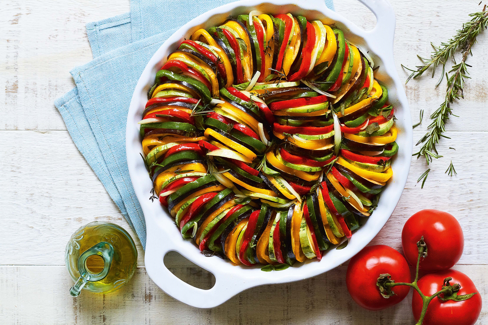

(Ratatouile)
Ingredientes:
- 1 abobrinha média;
- 1 berinjela média;
- 2 tomates;
- 1 cebola;
- 3 dentes alho;
- Mussarela a gosto;
- Alecrim a gosto;
- Orégano a gosto;
- Azeite de oliva quanto baste;
- Queijo parmesão para polvilhar;
Modo de Preparo:
- Corte a abobrinha e a berinjela em rodelas e coloque na água com sal;
- Corte os demais ingredientes em rodelas do mesmo tamanho;
- Em uma assadeira regada com azeite distribua os ingredientes intercalando-os;
- Cubra com parmesão e salpique os temperos;
- Leve ao forno com papel alumínio em fogo médio;
- Após cozinhar, retirar o papel alumínio e deixe no fogo alto;
- Sirva quente ou frio.